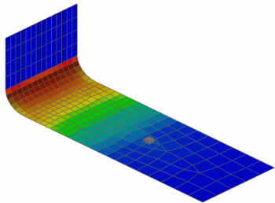

View stress contour results
 Post Processing Navigator
Post Processing Navigator
-
Expand the Response Results 2 node.
-
Expand the Stress — Element – Nodal node.
-
 Von-Mises
Von-Mises -
 Plot
Plot
Note that the highest stress occurs at the fillet, as discovered from the elemental stress response function, but the contour plot shows that stress also occurs in other areas at this time point.
-
 Return to Model (Layout Manager toolbar)
Return to Model (Layout Manager toolbar)
 Save (Standard toolbar)
Save (Standard toolbar)